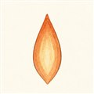

だい2わ ── 推力の章うしろに投げると、まえにすすむ
宇宙は真空です。押し返してくれる空気も、蹴る地面もありません。それなのに、ロケットはなぜ前に進めるのでしょう。「空気を後ろに押して進む」とよく誤解されますが、じつは空気はいりません。手もとの重いものを後ろに投げれば、自分は前に進む——スケートボードに乗ってボールを投げると体が後ろに下がる、あの理屈だけで飛んでいます。
ロケットが投げているのは、自分で積んできた推進剤です。燃焼室で燃やして高温高圧のガスにし、ノズルで一気に加速して、毎秒数百kgものガスを秒速2.5〜4.5kmで投げ続ける。この「投げ続ける」の反作用が推力です。
では、推力の大きさは何で決まるのでしょう。答えはシンプルで、「毎秒どれだけの質量を投げるか」×「どれだけ速く投げるか」。たくさん投げたければ大きなポンプと太いエンジンが要ります（量の勝負）。速く投げたければ燃焼とノズルの工夫が要ります（速さの勝負）。この関係は、じつは1本の式にまとまっています。
このうち「投げる速さ」には、専用の物差しがあります。それが比推力（ひすいりょく、Isp）。いわばロケットの燃費で、不思議なことに単位は「秒」です。意味はこう覚えるのが早い——推進剤1kgで、1kg分の重さを支え続けられる秒数。長く支えられるほど、同じ推進剤でたくさん仕事ができる、良い燃費のエンジンです。
| エンジン（推進剤） | 比推力（真空） |
|---|---|
| 固体ブースタ | 250〜280 秒 |
| Merlin 1D（ケロシン） | 311 秒 |
| LE-9（水素・H3の1段目） | 422 秒 |
| RS-25（水素・スペースシャトル） | 452 秒 |
水素が飛び抜けて良いのは、軽い分子ほど同じ温度で速く飛び出せるから。ただし第1話を思い出してください——1段目に必要なのは、機体を地面から引き剥がす力そのもの（推力）でした。比推力が良くても力が細ければ持ち上がりません。「量の勝負」の1段目と「速さの勝負」の上段。エンジン選びはいつもこの綱引きです。
よりみち海面と真空で推力が変わるわけ
「圧力のおまけ」(pe − p0)·Ae の外気圧 p0 は、高度とともに下がっていきます。つまり同じエンジンでも、昇るほど推力が増える——Merlin 1Dの比推力が海面282秒・真空311秒と2つ書かれるのはこのためです。設計では狙いの高度でちょうど pe = p0 になるようにノズルの広げ方を決めます（適正膨張といいます）。真空向けの上段エンジンのノズルが大きなラッパ状だったのは（第1話）、p0 = 0 の世界でできるだけ膨張させて速さを稼ぐため。では地上用エンジンで欲張って広げすぎると何が起きるか——それは第6話のお楽しみです。
よりみちなぜ「秒」が燃費になるのか
推力を推進剤の重量流量（質量流量×重力加速度）で割った量が比推力です。力を力で割るので単位が消え、時間だけが残る——これが「秒」の正体。実質は投げる速さ ve を 9.8 で割っただけの数なので、比推力422秒 ≒ 秒速4.1kmで投げていると読み替えられます。第1話のロケット方程式 Δv = ve·ln(m0/mf) の ve がまさにこれで、比推力が良いほど同じ質量比でも遠くへ行けます。
 流体屋のためのノート
流体屋のためのノート
推力の式は、新しい物理ではなく検査体積の運動量収支そのものです。エンジンを検査体積で囲むと、出口面から出ていく運動量流束 ṁve と、出口面に働く圧力の不釣り合い (pe−p0)Ae の和が、機体への反力＝推力。教科書のダクト流れの運動量定理が、そのまま実機の性能式になっています。pe=p0 が最適（適正膨張）で、ずれると過膨張・不足膨張になる——ここはノズル内の圧縮性流れの話として第6話でじっくりやります。そしてこの ṁ を作り出す装置こそターボポンプ（第5話）。あなたの主戦場は「推力の第1項の供給係」です。
{kind=link}
・G. P. Sutton & O. Biblarz, Rocket Propulsion Elements, 9th ed., ch.2–3
・NASA Glenn Research Center, "Rocket Thrust Equation" / "Specific Impulse"（パブリックドメイン）
・JAXA H3ロケット・LE-9 公開資料（比推力422秒・推力1471kN）